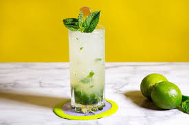
Ingredientes: Ron, limón, azúcar, hierbabuena, soda.
Preparación: Mezclar todo con hielo y servir frío.
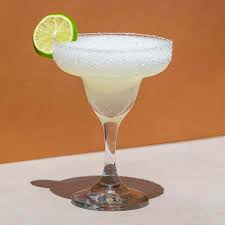
Ingredientes: Tequila, triple sec, limón.
Preparación: Agitar con hielo y servir con sal en el borde.
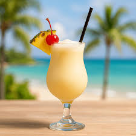
Ingredientes: Ron, crema de coco, jugo de piña.
Preparación: Licuar con hielo hasta obtener mezcla cremosa.
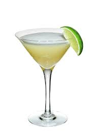
Ingredientes: Ron, limón, azúcar.
Preparación: Mezclar bien y servir frío.
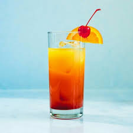
Ingredientes: Tequila, jugo de naranja, granadina.
Preparación: Servir en capas para efecto visual.
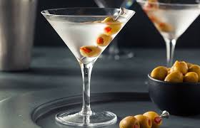
Ingredientes: Gin, vermut seco.
Preparación: Mezclar y servir con aceituna.
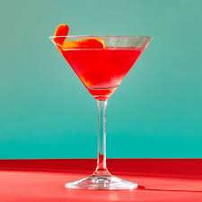
Ingredientes: Vodka, triple sec, jugo de arándano, limón.
Preparación: Agitar con hielo y servir en copa fría.
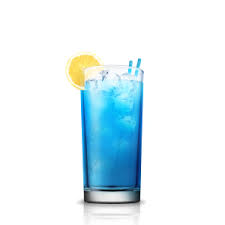
Ingredientes: Vodka, curaçao azul, limonada.
Preparación: Mezclar con hielo y servir bien frío.
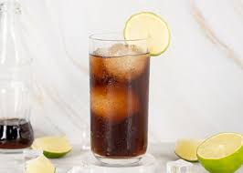
Ingredientes: Ron, cola, limón.
Preparación: Servir con hielo y mezclar suavemente.
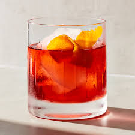
Ingredientes: Gin, vermut rojo, Campari.
Preparación: Mezclar con hielo y decorar con naranja.
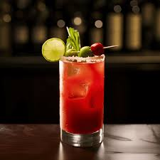
Ingredientes: Vodka, jugo de tomate, limón, especias.
Preparación: Mezclar bien y servir con hielo.
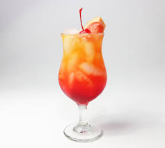
Ingredientes: Vodka, licor de durazno, jugo de naranja, granadina.
Preparación: Mezclar con hielo y servir frío.
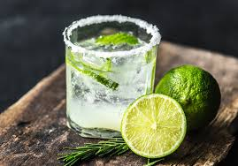
Ingredientes: Cachaça, limón, azúcar.
Preparación: Machacar el limón, agregar hielo y mezclar.
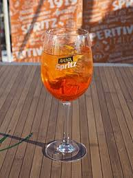
Ingredientes: Aperol, prosecco, soda.
Preparación: Servir en copa con hielo y rodaja de naranja.
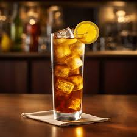
Ingredientes: Vodka, ron, gin, tequila, triple sec, cola.
Preparación: Mezclar todo con hielo y completar con cola.